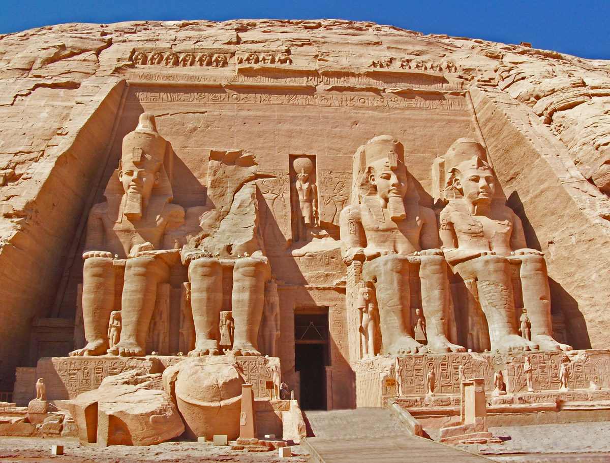

- 


AbuSimbel
piramide
sfinx
eiffel

"Indiferent ce se intampla, o calatorie iti ofera intotdeauna o poveste de spus."
Fie ca e vorba despre o calatorie pentru locul de munca, o calatorie neasteptata sau o plecare in vacanta, sa mergem intr-un loc nou sau chiar si intr-un loc in care am mai fost, poate fi un prilej foarte bun de a ne relaxa, de a descoperi locuri si culturi noi. Pe site-ul nostru vom vorbi mai mult despre vacanta, deoarece asa cum stim, aceasta este perioada optima in care ne putem bucura cu totul de experiente noi, fara a avea alte griji.
Aici puteti gasi atat informatii despre cele mai cautate si indragite obiective turistice, cat si sfaturi si experiente inedite ale altor oameni pasionati de calatorii. Tot pe site-ul nostru veti putea gasi oportunitati de cazare la preturi accesibile si chiar posibilitatea de a face rezervari in locurile in care veti dori sa petreceti mai mult timp pentru a explora si a va relaxa. Puteti apela cu incredere la serviciile postate pe site-ul nostru, deoarece acestea sunt apreciate de catre turistii din intreaga lume, fiind de incredere .
Egipt, Franta, Spania si mai ales Romania, pentru ca avem o tara minunata ce merita sa fie axplorata si apreciata, sunt doar cateva dintre obictivele turistice despre care puteti afla informatii de pe site-ul nostru. Puteti vedea atat o descriere detaliata, cat si imagini din locurile pe care le puteti vizita si cum am mai spus, impresii ale oamenilor de pretutindeni .